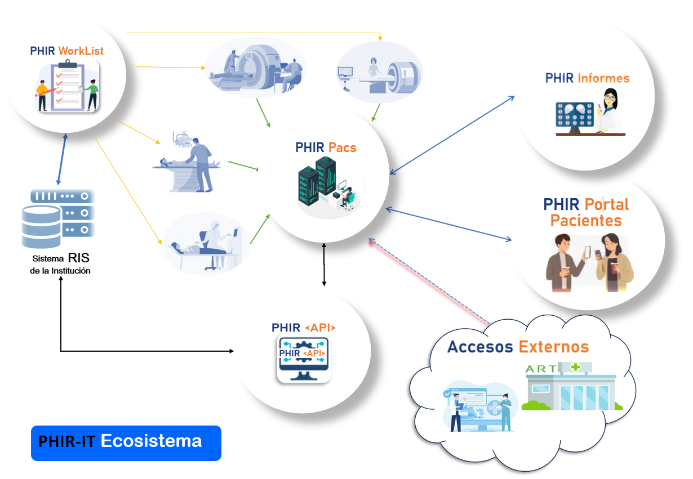

Nuestros productos y servicios.
Descubre el Ecosistema PHIRIT, diseñado para optimizar el flujo de trabajo en el sector salud, desde la gestión de turnos hasta la entrega de informes médicos.
Explorar Ecosistema
Descubre el Ecosistema PHIRIT, diseñado para optimizar el flujo de trabajo en el sector salud, desde la gestión de turnos hasta la entrega de informes médicos.
Explorar EcosistemaNuestro producto insignia que abarca todo el flujo de trabajo en el sector salud.
Módulo webservice que recibe mensajes del RIS del cliente en el momento de la admisión del turno/paciente/práctica.
Servidor de imágenes Dicom con un motor de visualización versátil y veloz.
El corazón del ecosistema, que gestiona todo el workflow desde el ingreso de la imagen hasta la entrega del informe médico.
Complementa tu ecosistema con estas soluciones especializadas.
Permite a los pacientes acceder a su historial de estudios, prácticas e informes dentro de la Institución.
Módulo de PhirITInformes que proporciona una API para acceder a la información de estudios y estados del workflow.
Sistema integral que gestiona todas las agendas de turnos y pacientes de la empresa.
Ofrecemos flexibilidad en la implementación de nuestras soluciones para adaptarnos a sus necesidades.
Implementación en sus propias instalaciones, adaptada a su infraestructura existente.
Solución basada en la nube, con opciones de servidor propio o gestionado por PHIRIT.